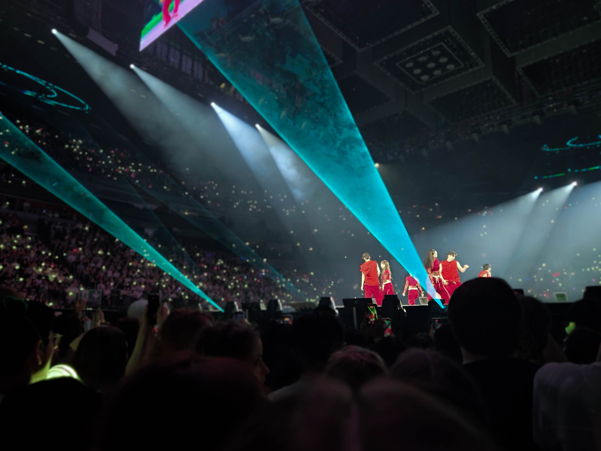
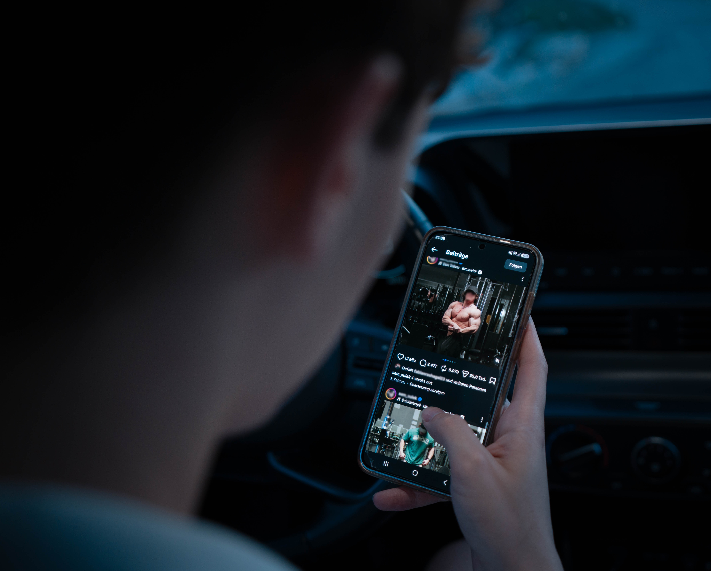
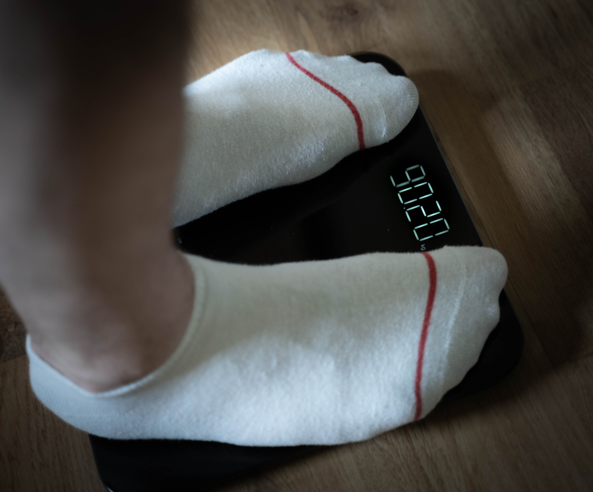
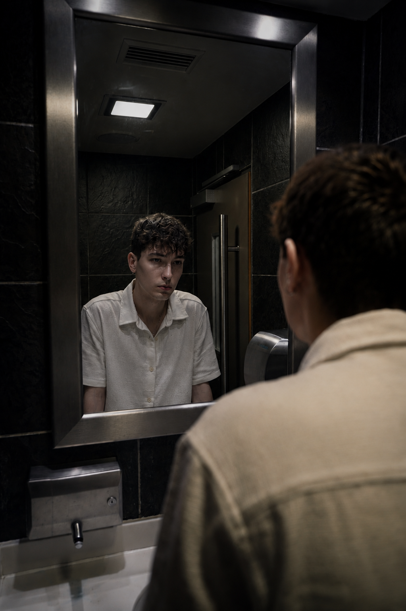
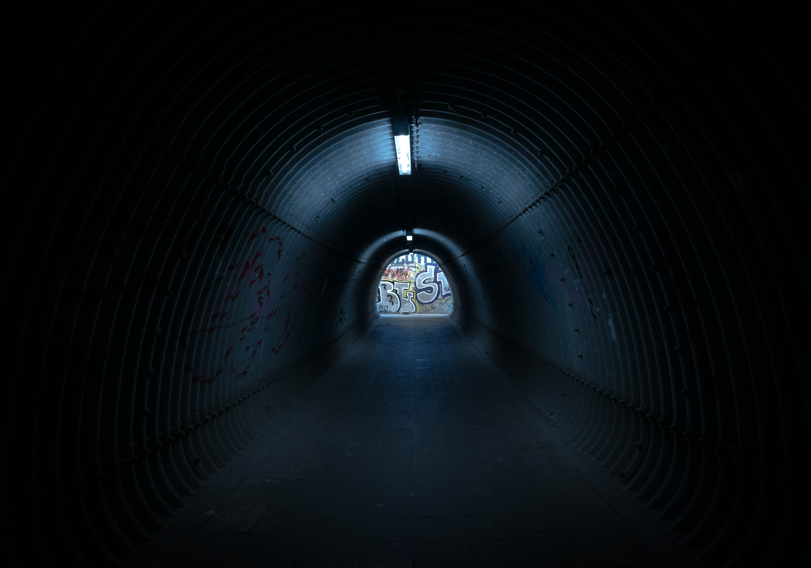
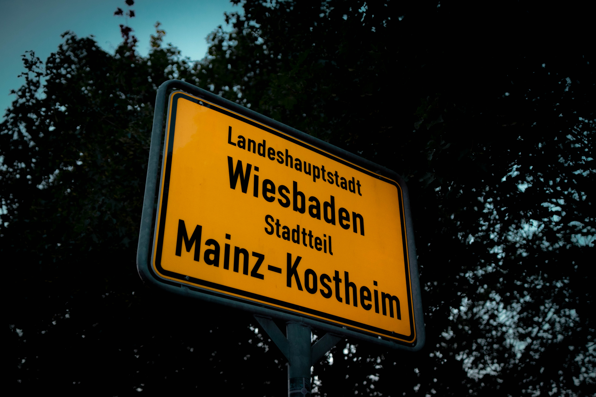
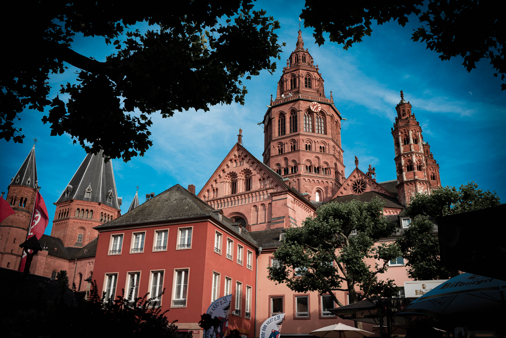
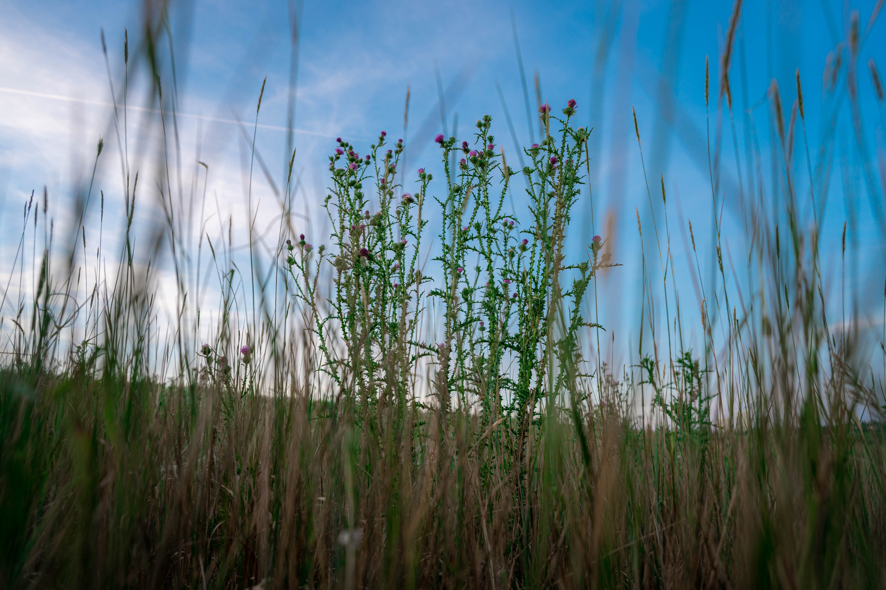

Ein Portfolio über Selbstbild, Zweifel und Heilung
Fabio Cuccu · Vahdet Hodzic · Lukas Reis
Digitale Bildbearbeitung · SoSe 26
Manche Menschen leuchten so hell, dass wir für einen Moment unser eigenes Licht vergessen


Je länger wir uns vergleichen, desto fremder wird unser eigenes Spiegelbild


Manche Kämpfe hinterlassen keine Narben – nur Risse im Inneren

Nicht alles, was uns prägt, ist sichtbar. Doch alles Sichtbare erzählt einen Teil unserer Geschichte


Akzeptanz beginnt dort, wo der Wunsch endet, jemand anderes sein zu müssen
